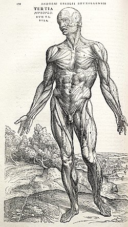
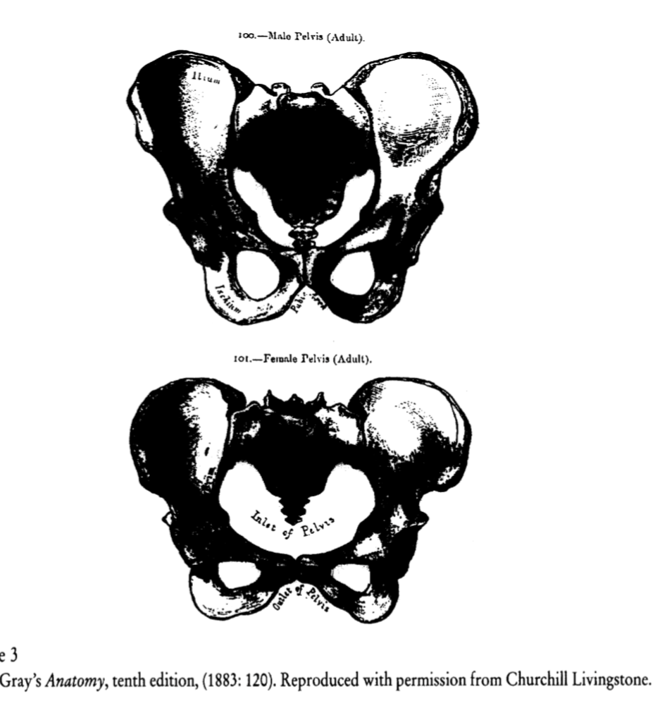

Séance 1 - Déconstruire les évidences sur le genre
Description du cours
Ce cours explore la construction historique et sociale des notions de sexe, genre et sexualité. Il vise à développer une approche critique des catégorisations naturalisées à travers l’étude de leur généalogie en France et dans les pays anglo-saxons, ainsi que leur circulation entre les champs médical, féministe et académique.
Objectifs pédagogiques
- Définir et articuler les notions de sexe, genre et sexualité
- Explorer la généalogie de ces concepts dans différents contextes nationaux
- Analyser la circulation de ces notions entre champs disciplinaires
- Développer une approche critique des catégorisations naturalisées
Ressources bibliographiques essentielles
- DELPHY, Christine (2001). L’ennemi principal. Penser le genre. Paris : Syllepse.
Fondamental pour la section sur l’approche française. - DORLIN, Elsa (2008). Sexe, genre et sexualités. Paris : PUF.
Excellente synthèse historique. - FAUSTO-STERLING, Anne (2012). Corps en tous genres. Paris : La Découverte.
Pour la partie médicale. - BERENI et al. (2020). Introduction aux études sur le genre. Bruxelles : De Boeck.
Manuel de référence actualisé.
Généalogie médicale du genre
Au XVIᵉ siècle, des anatomistes comme Vésale considéraient les organes génitaux masculin et féminin comme des variations d’un même modèle, illustrant une vision unisexe du corps humain. Cette perspective est également présente chez des penseurs comme Marin Cureau de La Chambre, qui proposait une échelle du genre humain où les sexes étaient perçus comme des degrés d’un continuum. (Steinberg 2008)
Au XVIIIᵉ siècle, une rupture épistémologique s’opère, marquée par une différenciation accrue des sexes. Cette évolution est influencée par des facteurs culturels, scientifiques et philosophiques, notamment les travaux de Buffon, qui ont contribué à la construction de la notion de sexe biologique. (Brahimi 1980) Cette transition reflète un passage d’une conception unisexe à une vision binaire des sexes, influençant profondément les perceptions sociales et culturelles de l’époque.
Dans l’Antiquité, le médecin Galien a développé une théorie selon laquelle le corps humain est un continuum de perfection. Dans cette vision, le masculin est considéré comme la forme la plus accomplie, tandis que le féminin est perçu comme une version incomplète. Cette perfection est associée à la chaleur : le corps masculin, plus chaud, permettrait aux organes de se développer vers l’extérieur. À l’inverse, le corps féminin, manquant de cette chaleur, garderait ses organes reproducteurs à l’intérieur. Ainsi, les organes féminins seraient similaires aux masculins, mais restés internes par manque de chaleur.
Cette conception s’appuie sur la théorie des humeurs, qui décrit quatre qualités fondamentales : chaud, froid, sec et humide. La chaleur est vue comme la force permettant la transformation du sang menstruel en semence, l’extériorisation des organes reproducteurs et le développement des caractéristiques masculines. Cette théorie influençait la médecine de l’époque, dictant des régimes alimentaires différents selon le sexe et des traitements pour “rééquilibrer” les humeurs.
Au Moyen Âge et à la Renaissance, ces idées antiques ont été transmises et adaptées. Les traductions arabes des textes de Galien et d’autres savants ont joué un rôle clé dans cette transmission. Des centres comme Tolède ont traduit ces œuvres en latin, enrichissant le savoir médical. Les manuscrits circulaient dans les écoles de médecine, les monastères et les universités naissantes. La théorie du sexe unique a persisté, intégrée aux savoirs chrétiens et influençant les pratiques médicales, comme les dissections et les illustrations anatomiques.
Cependant, des tensions ont émergé. Les observations anatomiques contredisaient parfois la théorie, soulevant des questions sur la génération et le rôle des sexes. Cela a conduit à une remise en question progressive du modèle unique. Ainsi, bien que le modèle du sexe unique ait dominé la pensée médicale jusqu’au XVIIIe siècle, des signes de changement apparaissaient déjà.
La vision hiérarchique des corps, plaçant l’homme adulte au sommet, suivie des femmes et des enfants, trouve ses racines dans la théorie des humeurs de la médecine antique. Selon cette théorie, le corps humain est composé de quatre humeurs : le sang, le phlegme, la bile jaune et la bile noire. L’équilibre de ces humeurs détermine la santé et le tempérament d’une personne(Bonnard 2013).
La chaleur corporelle était considérée comme un critère de perfection. L’homme adulte était perçu comme possédant une chaleur maximale, tandis que les femmes et les enfants étaient vus comme ayant une chaleur déficiente, les rendant ainsi moins parfaits. Cette conception est illustrée par Galien, qui affirmait que la femme est “plus imparfaite que le mâle” en raison de sa nature plus froide.(Moreau 2010)
D’autres critères de perfection incluaient l’équilibre des humeurs, le développement des organes et la force physique et morale. Ces idées ont contribué à une vision hiérarchisée des corps, influençant les perceptions des différences entre les sexes. (Bajeux and Fauvel 2024)
La théorie des humeurs, développée par Hippocrate et Galien, a établi une hiérarchie des corps basée sur l’équilibre des humeurs et les qualités associées. Selon cette conception, l’homme adulte, caractérisé par une chaleur et une sécheresse optimales, occupait le sommet de cette échelle, tandis que les femmes et les enfants, considérés comme plus froids et humides, se situaient à des niveaux inférieurs. Cette hiérarchie justifiait des perceptions de supériorité masculine et d’infériorité féminine, influençant les pratiques médicales et sociales de l’époque.
Les médecins de l’Antiquité croyaient que des facteurs environnementaux tels que le régime alimentaire, le mode de vie et le climat pouvaient influencer l’équilibre des humeurs, permettant ainsi des transformations ascendantes (vers le masculin) ou descendantes (vers le féminin) sur cette échelle de perfection corporelle. Par exemple, une alimentation appropriée et des exercices physiques étaient recommandés pour augmenter la chaleur corporelle et favoriser des qualités considérées comme masculines.
Ces conceptions ont engendré des anxiétés sociales et médicales concernant la “régression” ou la féminisation des hommes, associée à une perte de chaleur vitale et à un affaiblissement moral. Pour prévenir cette déchéance perçue, des prescriptions médicales telles que des régimes “fortifiants” et des exercices “virils” étaient préconisées. Ces pratiques visaient à maintenir l’équilibre des humeurs et à préserver la vigueur masculine.
Aujourd’hui, bien que la théorie des humeurs soit obsolète, certaines de ses conceptions persistent dans le langage médical et les représentations populaires, reflétant la dimension sociale de la pensée médicale et les enjeux politiques historiques liés aux catégories de genre.Impact social et culturel du modèle unisexe
La théorie des humeurs, développée dans l’Antiquité, a profondément influencé la perception des différences entre les sexes et la justification de l’ordre social. Selon cette théorie, le corps humain est composé de quatre humeurs : le sang, le phlegme, la bile jaune et la bile noire. L’équilibre de ces humeurs détermine la santé et le tempérament d’une personne. Les hommes étaient considérés comme chauds et secs, tandis que les femmes étaient perçues comme froides et humides. Cette classification a conduit à une hiérarchisation des sexes, où la perfection masculine justifiait la domination masculine, et l’“imperfection” féminine légitimait la subordination. Ces conceptions médicales ont circulé entre les discours médicaux et politiques, renforçant les interprétations religieuses et juridiques qui fondaient les droits et devoirs selon le sexe, et régulaient les comportements sociaux. Par exemple, la médecine antique prescrivait des régimes “fortifiants” et des exercices “virils” pour les hommes afin de maintenir leur chaleur vitale, tandis que les femmes étaient soumises à des traitements visant à équilibrer leur tempérament perçu comme froid et humide. Ces pratiques médicales différenciées ont contribué à la construction des identités sociales et des rôles genrés, en définissant médicalement les aptitudes de chaque sexe, influençant ainsi l’éducation, les rôles sociaux et les normes comportementales. Aujourd’hui, bien que la théorie des humeurs soit obsolète, certaines de ses conceptions persistent dans le langage médical et les représentations populaires, reflétant la dimension sociale de la pensée médicale et les enjeux politiques historiques liés aux catégories de genre.
Les conceptions médicales anciennes continuent d’influencer la médecine moderne, notamment à travers des biais de genre dans les diagnostics et les traitements. Par exemple, les femmes sont souvent sous-représentées dans les essais cliniques, ce qui peut affecter la qualité de leur prise en charge. De plus, des stéréotypes liés au genre peuvent influencer la manière dont les professionnels de santé dépistent et traitent certaines maladies.
Ces analyses montrent comment des modèles médicaux historiques ont structuré les rapports sociaux, influencé durablement les pratiques et continuent d’impacter notre vision contemporaine. Comme l’affirme Thomas Laqueur, “le sexe, tel que nous le connaissons… est le produit d’un moment historique particulier”. (Laqueur 2013)
Au XVIIIe siècle, une transformation majeure s’opère dans la compréhension des sexes. Les avancées en anatomie pathologique, telles que la pratique systématique des autopsies et le développement des collections anatomiques, offrent un nouveau regard sur les structures internes du corps humain. Des innovations techniques, comme le perfectionnement du microscope et l’amélioration des illustrations médicales, permettent une observation plus précise des organes. Parallèlement, le contexte sociopolitique, marqué par la Révolution française et une nouvelle conception de la citoyenneté, suscite des débats sur la place des femmes dans la société.
Cette période voit l’abandon progressif de l’échelle de perfection hiérarchique au profit d’une pensée différentialiste. Les sexes ne sont plus perçus selon une continuité, mais comme deux natures distinctes et irréductibles. Les organes féminins, auparavant considérés comme des versions inversées des organes masculins, sont désormais reconnus pour leur spécificité. Cette révolution conceptuelle s’accompagne d’une nouvelle nomenclature anatomique, avec une terminologie spécifique pour chaque sexe, abandonnant les analogies traditionnelles.
Ces changements ont des implications immédiates en médecine, notamment avec la naissance de la gynécologie et la spécialisation des soins par sexe. De nouvelles pathologies “féminines” sont identifiées, renforçant la naturalisation des rôles sociaux et la séparation des sphères masculine et féminine. Des discours sur la complémentarité des sexes émergent, justifiant des rôles distincts pour les hommes et les femmes.
Pierre Roussel, dans son ouvrage Système physique et moral de la femme (Vila 1995) (1775), illustre cette nouvelle perception en affirmant : “La femme n’est pas seulement différente de l’homme par ses organes, elle l’est par tout son être.” Cette citation souligne la vision essentialiste de l’époque, où les différences entre les sexes sont considérées comme fondamentales et englobantes.
Cette rupture épistémologique illustre comment la pensée médicale participe à la construction sociale des catégories de sexe et de genre.
Au XVIIIᵉ siècle, la médecine a contribué à la construction du dimorphisme sexuel en adoptant une approche anatomique systématique. Les médecins ont recherché méthodiquement les différences entre les sexes, documentant de manière exhaustive les variations observées et établissant des normes sexuées. Cette démarche a conduit à une révolution du langage médical, avec l’abandon des termes analogiques au profit d’une nomenclature spécifique différenciant systématiquement les descriptions anatomiques masculines et féminines. (Edelman 2000)
Cette évolution s’est accompagnée d’une naturalisation des inégalités, où les différences anatomiques étaient utilisées pour justifier les rôles sociaux. La construction d’une “nature féminine” s’est appuyée sur la théorie des tempéraments, attribuant aux femmes des traits tels que la sensibilité, la fragilité et l’émotivité, tandis que les hommes étaient associés à la force, la rationalité et la stabilité. Ces conceptions ont eu un impact significatif sur l’éducation et les droits, renforçant les stéréotypes de genre. (Vuille 2016)
Dans la pratique médicale, cette période a vu la naissance de la gynécologie en tant que spécialité autonome. Des instruments spécifiques ont été développés, et des praticiens spécialisés ont été formés pour traiter des aspects tels que la grossesse, l’accouchement, la puberté, la ménopause, ainsi que des pathologies considérées comme spécifiquement féminines, comme l’hystérie.
La médicalisation différenciée a entraîné une surveillance accrue du corps féminin, incluant le contrôle des cycles menstruels, la régulation des comportements et des prescriptions morales. De nouvelles catégories pathologiques, telles que les troubles “spécifiquement féminins”, les maladies nerveuses et les désordres de la reproduction, ont été définies, renforçant la vision binaire des corps et établissant des normes biologiques et sociales qui continuent d’influencer la médecine contemporaine.
Cette période a donc durablement établi une médecine genrée, avec des implications théoriques et pratiques qui perdurent encore aujourd’hui.
Au XIXᵉ siècle, la médecine a adopté une approche systématique pour étudier les différences sexuelles. Les dissections régulières et les collections anatomiques hospitalières ont permis des observations détaillées des particularités sexuées. Des chercheurs comme Xavier Bichat ont approfondi l’anatomie des tissus, tandis que Pierre Cabanis a exploré les liens entre le physique et le moral, et Julien-Joseph Virey a décrit la “nature féminine”. Ces travaux ont conduit à une catégorisation scientifique des différences sexuelles, notamment en ce qui concerne le système nerveux, la structure osseuse et les organes spécifiques.
Entre 1850 et 1900, de nouvelles disciplines consacrées à l’étude du sexe ont émergé. La sexologie, par exemple, s’est développée avec des ouvrages tels que Psychopathia Sexualis de Richard von Krafft-Ebing en 1886, qui proposait une classification des comportements sexuels et définissait les “perversions”. Cette approche a souvent pathologisé les comportements non conformes aux normes de l’époque, renforçant des conceptions rigides de la masculinité et de la féminité. Parallèlement, la révolution endocrinologique a permis l’isolement des hormones sexuelles et une meilleure compréhension de leur rôle dans le développement sexuel, ouvrant la voie à de nouvelles perspectives thérapeutiques, comme les traitements hormonaux.
Au début du XXᵉ siècle, les théories de la différenciation sexuelle se sont consolidées avec la découverte des chromosomes sexuels, la compréhension des hormones de développement et l’étude de la différenciation embryonnaire. Ces avancées ont eu des applications cliniques, notamment dans le traitement des “anomalies” sexuelles, l’établissement de critères de normalité et la mise en place de protocoles thérapeutiques spécifiques.
Cette période a ainsi établi une “science du sexe” moderne, caractérisée par des normes biologiques strictes et un contrôle médical accru du genre. Ces développements ont eu des implications sociales et politiques significatives, influençant la perception des identités sexuées et la régulation des comportements sexuels.
Étude de cas : les protocoles de John Money (1955)
Dans les années 1950, le psychologue John Money a développé la théorie selon laquelle l’identité de genre est malléable à la naissance et se forme principalement par l’éducation et l’environnement social. Il a proposé que les enfants naissent sans conscience innée de leur sexe ou de leur genre, et que ces caractéristiques se développent à travers leur éducation, en particulier au cours d’une période critique située entre 18 et 24 mois.
Sur la base de cette théorie, Money a établi des protocoles cliniques pour la prise en charge des enfants intersexes, c’est-à-dire ceux nés avec des caractéristiques sexuelles ambiguës. Ces protocoles incluaient des critères pour l’assignation d’un sexe, mettant l’accent sur l’importance de l’apparence des organes génitaux externes. Il préconisait des interventions chirurgicales précoces pour “normaliser” ces organes, suivies d’une éducation cohérente avec le sexe assigné. Le secret médical était également considéré comme essentiel, les parents étant souvent encouragés à ne pas divulguer la condition intersexe de l’enfant, afin de favoriser une identité de genre conforme au sexe assigné.
Ces protocoles ont eu des implications théoriques et pratiques significatives. Ils ont contribué à une distinction conceptuelle entre le sexe biologique et le genre en tant que construction sociale. La priorité accordée à l’apparence des organes génitaux a influencé durablement la prise en charge médicale des enfants intersexes, avec des interventions chirurgicales souvent réalisées sans le consentement éclairé des patients concernés. Cependant, des cas ultérieurs, tels que celui de David Reimer, ont mis en évidence les limites et les conséquences potentiellement néfastes de ces approches, conduisant à une réévaluation des pratiques médicales concernant l’assignation de sexe et le respect de l’autonomie des individus intersexes.
Les protocoles cliniques développés par John Money pour la prise en charge des enfants intersexes reposaient sur plusieurs principes clés. L’un des aspects fondamentaux était l’assignation précoce d’un sexe, basée principalement sur l’apparence des organes génitaux externes. Cette décision visait à faciliter l’intégration sociale de l’enfant en lui attribuant un sexe clairement identifiable. Pour renforcer cette assignation, des chirurgies de “normalisation” étaient souvent réalisées dès le plus jeune âge afin de conformer les organes génitaux à l’apparence attendue du sexe assigné. Le secret médical entourant ces interventions était également jugé essentiel, les parents étant encouragés à ne pas divulguer la condition intersexe de l’enfant, dans le but de favoriser le développement d’une identité de genre cohérente avec le sexe assigné.
Ces protocoles ont eu des implications théoriques et pratiques significatives. Ils ont contribué à une distinction conceptuelle entre le sexe biologique et le genre en tant que construction sociale, en postulant que l’identité de genre pouvait être façonnée par l’éducation et l’environnement, indépendamment du sexe biologique. La priorité accordée à l’apparence des organes génitaux a conduit à une médicalisation accrue des corps intersexes, avec des interventions chirurgicales souvent réalisées sans le consentement des personnes concernées. Ces pratiques ont eu une influence durable sur la prise en charge médicale des personnes intersexes, mais ont également suscité des critiques et des réévaluations éthiques, notamment en ce qui concerne le respect de l’autonomie et des droits des patients.
Sources historiques et études de cas pour la généalogie médicale du genre


Transition vers la partie suivante
Les critiques féministes ont mis en lumière la pathologisation des corps féminins et la normativité médicale qui en découle. Elles ont souligné que de nombreux savoirs biologiques sur le corps ne sont pas neutres, mais construits à partir de positions de domination, entretenant des croyances essentialisantes et hiérarchisantes sur les corps. Par exemple, des biologistes comme Emily Martin (Martin 1996) ont révélé les métaphores sexistes présentes dans la description de la procréation, où le spermatozoïde est souvent décrit comme actif et l’ovule comme passif
Cette pathologisation s’est manifestée par la médicalisation de phénomènes naturels du corps féminin, tels que le syndrome prémenstruel, souvent considéré comme une pathologie nécessitant une intervention médicale. De plus, des pratiques médicales comme les interventions chirurgicales précoces sur les enfants intersexués ont été critiquées pour leur tendance à conformer les corps à une binarité de genre normative, sans consentement éclairé des personnes concernées.
Les mouvements féministes ont joué un rôle crucial dans la critique de ces pratiques, en dénonçant la médicalisation excessive et en revendiquant une réappropriation du corps par les femmes. Par exemple, le mouvement “Our Bodies, Ourselves” aux États-Unis dans les années 1970 a encouragé les femmes à se former et à échanger des informations sur leur propre santé, afin de réduire la dépendance au corps médical et de promouvoir une meilleure compréhension de leur propre corps.(Richardson and Martin 1988)
Ces critiques ont conduit à une réévaluation des pratiques médicales et à une prise de conscience de la nécessité d’une approche plus inclusive et respectueuse des expériences des femmes et des personnes intersexuées. Elles ont également souligné l’importance de considérer le contexte historique et social dans lequel ces savoirs médicaux ont été produits, afin de comprendre les biais qui peuvent les influencer.
Ainsi, une approche historique est essentielle pour comprendre comment les différences sexuelles ont été construites médicalement et comment ces constructions ont été contestées par les mouvements féministes. Cette perspective critique permet de remettre en question les normes établies et de promouvoir des pratiques médicales plus équitables et respectueuses de la diversité des corps et des identités. Système de représentations
Les décisions médicales concernant l’assignation du sexe chez les nouveau-nés présentant des variations du développement génital reposent souvent davantage sur des critères sociaux et culturels que strictement biologiques. Les médecins, en se positionnant comme découvreurs d’un “vrai sexe”, participent en réalité à sa construction selon des normes culturelles prédominantes.
Une importance considérable est accordée à l’apparence des organes génitaux externes. Par exemple, la définition culturelle d’un “pénis adéquat” inclut des critères de taille et de fonctionnalité, reflétant des normes sociétales spécifiques. Cette approche crée une asymétrie dans les critères anatomiques : une attention particulière est portée au pénis pour les garçons, tandis que les critères pour les filles sont souvent moins définis.
Dans le discours médical, des termes tels que “anormal” ou “hermaphrodite” sont évités, et les interventions chirurgicales sont présentées comme des “réparations” plutôt que des “constructions”. Cette terminologie maintient la fiction d’une binarité sexuelle naturelle, malgré la diversité biologique observée.
Les parents subissent une pression pour procéder à une assignation rapide et définitive du sexe de leur enfant. Ils reçoivent des instructions sur la manière de gérer le secret et l’ambiguïté, contribuant ainsi à la construction collective d’une “fiction opératoire” concernant le genre de l’enfant.
Ces pratiques soulignent l’influence des normes sociales et culturelles sur les décisions médicales d’assignation de sexe, mettant en évidence la complexité de la construction du genre dès la naissance.